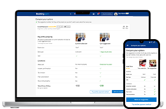
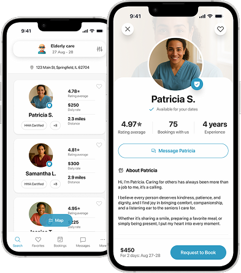

Booking.com · Travel · 2019
Smart Upselling After Payment Failure
A recovery flow that offers users a comparable room immediately after a third-party payment fails, giving them a path forward instead of a dead end.

15+ years simplifying B2C and B2B products through strategy, systems thinking and execution.
Worked with
Case Studies
Booking.com · Travel · 2019
A recovery flow that offers users a comparable room immediately after a third-party payment fails, giving them a path forward instead of a dead end.

Healthcare · AI · 2025
Designed an AI-first caregiving platform from scratch — web portal, React Native apps, conversational AI, and a full design system.

Design System · Enterprise · 2024
A scalable design system to unify Staff and Online Portals for 120+ credit unions with themeable React components and design tokens.
Fintech · Insurance · 2023
Redesigned the underwriting review flow to surface key risk signals upfront, cutting average decision time by 40%.
B2B SaaS · Field Operations · 2018
Led the design of a field team management platform from MVP to A/B testing — route tracking, real-time validation, and performance dashboards.
Dev Tools · B2B · 2022
Owned end-to-end design for the #1 Figma plugin with 1M+ installs, serving teams at Amazon, Cisco, Samsung and Deloitte.
Experience
Clipboard
Senior Product Designer · AI Special Projects
2025 — 2026
San Francisco, US · Remote
Clutch
Senior Product Designer · Design Systems
2024 — 2025
San Francisco, US · Remote
Toptal
Senior Product Designer
2023 — Present
Global · Remote
Anima
Senior Product Designer
2022 — 2023
Tel Aviv, IL · Remote
Booking.com
UX Designer
2017 — 2022
Amsterdam, NL
Trade Force (Now Neogrid)
Head of Design
2014 — 2017
São Paulo, BR
Pakua IT
UX Designer & Front-End Developer
2011 — 2014
São Paulo, BR
FAQ
Yes. I move fluidly between shaping product strategy and shipping high-fidelity UI. In early-stage work, that means co-defining scope with founders and PMs — using Jobs to Be Done, opportunity mapping, and rapid prototyping. In mature organisations, it means running design critiques, owning the design system, and translating roadmap goals into polished, production-ready flows.
AI is now core infrastructure for how I work — not a side tool. I use LLMs for synthesis, generative tools to accelerate early visual exploration, and I design for AI products: chatbots, copilots, and agentic interfaces. I think carefully about where AI adds genuine value vs. where it creates noise.
I define success metrics before designing, not after. Primary metrics are typically business outcomes — conversion rate, activation, retention, revenue per user. Secondary metrics cover usability — task completion rate, error rate, time-on-task. At Booking.com, this approach translated directly: +16% conversion lift, +1,500 bookings/day.
I treat design systems as products, not style guides. That means a token architecture (primitive → semantic → component), clear governance, contribution workflows, and versioned documentation. I focus on adoption, flexibility, and velocity. I work natively in Figma and hand off to React/Storybook.
I've designed chatbots, copilots, and agentic interfaces — from the first user message to error recovery and human handoff flows. I design explicit affordances for uncertainty, graceful failure states, and progressive disclosure of AI capabilities.
I keep Figma files production-ready: named layers, auto layout, responsive frames, complete component states, and interaction specs. I speak the language of constraints — I know what's expensive to build and design accordingly. My goal is zero ambiguity at handoff and zero surprises in QA.
Travel, Fintech, e-Commerce, B2B SaaS, Fitness, AI, Retail, Sports, Logistics, and Dev Tools. The common thread is scale and complexity: products used by millions of people, or by small teams whose daily workflows depend on them.
Yes. I take on freelance and contract engagements with product teams that need hands-on design leadership. I work through Toptal (top 3% vetted) and directly. Timezones are flexible; I've worked comfortably across US, EU, and APAC teams.
Send me a short message about what you're working on and what kind of help you need. I'll reply within 24 hours. If there's a fit, we'll set up a 30-minute call to map the scope, timeline, and working style.
Contact
Available for freelance, contract, and full-time opportunities.